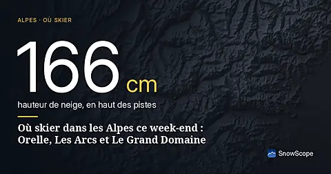
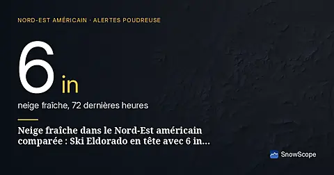

Bulletins neige · Sécurité avalanche
Des bulletins neige quotidiens pour les skieurs : où est la neige, ce qui arrive et où skier, d'après la carte de neige SnowScope et les stations de mesure. Chaque chiffre vient des données du jour.


Cauterets Cirque du Lys domine les Pyrénées avec 24 cm au sommet le 22 novembre. Les chutes de neige prévues le 25 novembre pousseront la couverture de 44 à 51 stations.
La Grave affiche 171 cm en versants supérieurs aujourd'hui, soit 68 % de la normale pour fin novembre. Les Alpes ont enregistré des gains importants ce week-end.

Où est tombée le plus de neige fraîche dans les Alpes ? Neige fraîche à Le Reposoir Chalet Neuf : 128 cm en 72 heures, dont 88 cm sur les dernières …


Pluie au-dessus de 2 980 m à Gavarnie-Gèdre aujourd'hui, mais la neige revient dans quatre jours. Comment s'habiller et quoi apporter face aux conditions changeantes des Pyrénées.

Les Arcs ont reçu 102 cm de neige fraîche au cours des 72 dernières heures avec 80 cm prévus d'ici le 24 novembre. Bulletin SnowScope du 21 novembre.

Les Contamines ont reçu 145 cm de neige en 72 heures ; les pentes supérieures en conservent 115 cm. D'autres chutes sont prévues pour le week-end.

Les Arcs en tête avec 166 cm en altitude. La neige tombe jusqu'à dimanche. Les meilleures pistes sont en altitude et exposées au nord. Données du 20 novembre.


Le niveau de congélation atteint 1 500 m à Banff Sunshine Village le 19 novembre. De la neige fraîche est tombée dans tout l'ouest du Canada au cours des 72 dernières heures, mais la pluie menace la poudreuse nouvelle.
Bulletin neige Alpes 18 novembre : Orelle en tête avec 111 cm de neige en haut des pentes. Les prévisions du week-end annoncent 100+ cm de neige fraîche dans les grandes stations.


Mount Washington Alpine Resort domine avec 158 cm au sommet le 15 novembre. La neige fraîche à Whistler Blackcomb et Mount Cain Alpine Park offre aussi d'excellentes conditions pour le ski de novembre.

Bulletin neige Pyrénées 15 novembre : pluie et neige mélangées à Cauterets, 7–19 cm sont tombés en 72 heures près du sommet. D'autres précipitations attendues d'ici le 18 novembre.

Pluie prévue alors que le niveau de congélation monte à 4 080 m ; la neige mesurée le 15 novembre est fine (moins de 20 cm) dans toutes les grandes stations des Pyrénées.
Les Deux Alpes : combien de neige fraîche ? 38 cm en 72 heures (15 novembre). Où est tombée le plus de neige fraîche dans les Alpes ? La Grave a reçu …

Pluie et neige mélangées dans les Pyrénées le 14 novembre : Cauterets Cirque du Lys domine la région avec 13–20 cm en 72 heures, mais la pluie tombe sous 2 340 m.

Poudreuse fraîche dans trois stations des Pyrénées, neige mince partout, et journées chaudes qui risquent de former une croûte. Voici ce qu'il faut emporter et porter le 14 novembre.

Les Deux Alpes : 38–42 cm de neige fraîche en 72 heures (Alpes, 14 novembre). La Grave a reçu 53 cm de neige fraîche en 72 heures, dont 7 cm au cours …

Ce weekend dans les Alpes : La Grave en tête avec 78 cm, Pfelders 133 cm sur les pentes supérieures, Les Deux Alpes 52 cm. De la neige fraîche arrive samedi et dimanche. Données du 13 novembre.
La Grave domine les Alpes avec 78 centimètres et 61 centimètres de neige fraîche en 72 heures, alors que 33 centimètres supplémentaires sont prévus.


Les pentes hautes de Dent de Vaulion font face à la pluie avec le niveau de congélation atteignant 2 800 m jeudi ; les stations d'altitude reçoivent de la neige fraîche pour le week-end.

Trois grands domaines de l'Ouest canadien pour ce week-end : Manning Park Resort en tête avec 101 cm, plus des chutes de neige prévues. Données du 11 novembre.

Bonneval-sur-Arc affiche 52 cm en altitude le 8 novembre. Les semaines 10-11 correspondent à la pointe de la saison neigeuse. Découvrez ce qu'il faut emporter selon les prévisions.

Depuis le 6 novembre, la neige est passée de 0 sq mi (0 km²) à 788 sq mi (2 040 km²) aujourd'hui ; pour le 11 novembre, notre prévision donne …

50 cm en haut du domaine : voilà pourquoi La Grave est en tête de notre liste. Nous avons combiné la hauteur de neige du jour, la neige fraîche des …

Whistler Blackcomb a reçu 100 cm de poudreuse en 72 heures jusqu'au 8 novembre, mais elle est tombée de manière inégale : 96 cm au sommet, rien à la base.


Bonneval-sur-Arc en tête avec 52 cm en altitude. Les prévisions du week-end sont calmes mais privilégiez les terrains élevés orientés nord pour la meilleure neige de début de saison le 6 novembre.

Isola 2000 a reçu 62 cm de neige fraîche en 72 heures jusqu'au 6 novembre. Poudreuse de début de saison en altitude dans les Alpes du Sud.